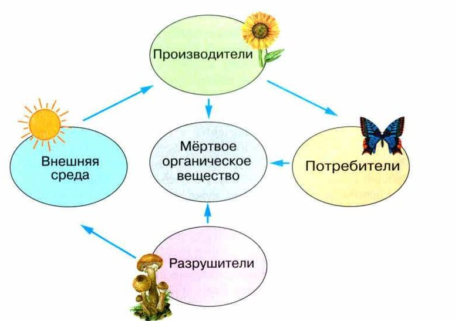
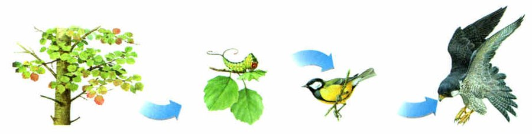
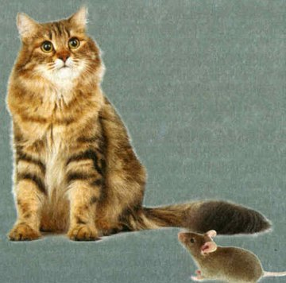
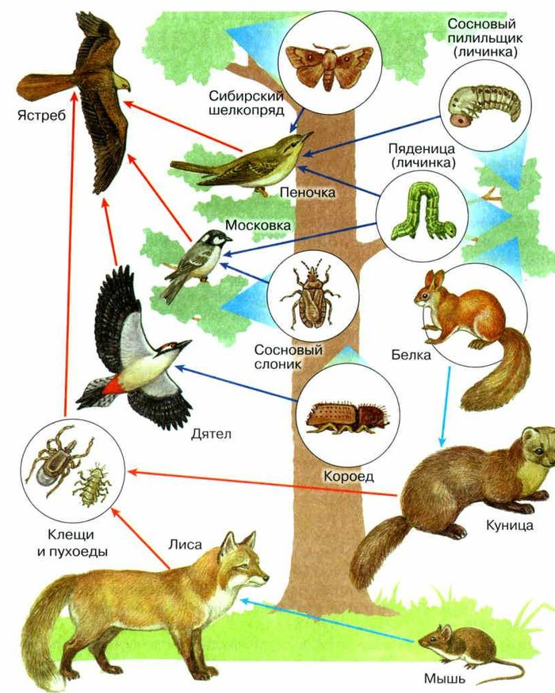
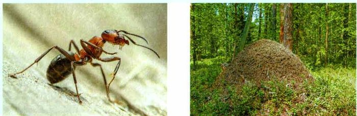

Пищевые связи и пищевые цепи
В каждом сообществе есть множество связей, которых сразу не видно. Главные из них — пищевые связи: одни организмы служат пищей для других. Через пищевые связи от организма к организму передаются вещество и энергия (рис. 99).
Ряд организмов, в котором каждый предыдущий служит пищей для последующего, называют пищевой цепью. По цепи вещество и энергия переходят от источника — предыдущего звена — к потребителю, следующему звену.
Первое звено цепи — производители (продуценты): зелёные растения, которые создают органические вещества и запасают энергию. Второе — потребители (консументы). Третье — разрушители (редуценты). Простая цепь: растения → гусеницы → насекомоядные птицы → хищные птицы (рис. 100).
Пищевые связи. Каждое природное сообщество имеет множество невидимых на первый взгляд связей между организмами. Основными являются пищевые связи, в которых особи одного вида являются источниками пищи для особей другого вида. Через пищевые связи вещество и энергия передаётся от одного организма другому (рис. 99).
Пищевые цепи. Ряд организмов, в котором каждый предыдущий служит пищей для последующего, называют пищевой цепью. В цепи питания происходит перенос вещества и энергии от источника (предыдущего звена) к потребителю (последующему звену).
Начальным звеном пищевой цепи являются производители (продуценты). Это зелёные растения, образующие органические вещества и создающие запас энергии. Второе звено представлено потребителями (консументами). Третье звено — это разрушители органического вещества (редуценты). Рассмотрим пример простой пищевой цепи: растения — гусеницы — насекомоядные птицы — хищные птицы (рис. 100).

▲ Проследи стрелки: откуда производители берут вещества и куда они возвращаются?

▲ Назови каждое звено: кто производитель, а кто потребитель?

▲ Мышь ест зёрна. Составь цепь из трёх звеньев.
1. Что такое пищевая цепь? Приведи пример.
2. Почему пищевая цепь всегда начинается с растений? Вспомни §21.
Куда уходит энергия
Все звенья цепи связаны и зависят друг от друга: по ним от первого к последнему передаются вещество и энергия. Растения запасают всего около 1 % энергии солнечного света. Растительноядное животное усваивает от 20 до 60 % растительного корма.
Когда пища переходит к следующему звену, большая часть её энергии тратится на жизнь: на дыхание, движение, размножение, на то, чтобы тело оставалось тёплым. На рост и накопление массы остаётся совсем немного — и только эту часть съест следующее звено. На каждом шаге теряется примерно 90 %, а дальше переходит лишь около 10 %.
Поэтому потребителей в сообществе не может быть сколько угодно — только столько, чтобы растения успевали расти и кормить всех. Если в лесу будет слишком много растительноядных животных, они могут уничтожить растения, которыми питаются.
В сообществе всегда есть определённое соотношение численности и массы звеньев. В каждом следующем звене биологическая масса меньше. Обычно чем больше масса первого звена, тем больше она и в следующих.
Все звенья пищевой цепи взаимосвязаны и взаимозависимы. Между ними от первого к последнему осуществляется передача вещества и энергии. Обычно растения в процессе фотосинтеза связывают около 1% энергии света. Растительноядное животное усваивает от 20 до 60% растительного корма.
При переходе органических веществ от одного звена пищевой цепи к другому большая часть заключённой в них энергии расходуется на жизнедеятельность организмов: дыхание, движение, размножение, поддержание температуры тела. Лишь небольшая часть потреблённых веществ усваивается и используется на рост организма и накопление биологической массы. Значит, только эта часть может использоваться в качестве пищи на следующем звене пищевой цепи. На каждом этапе передачи вещества и энергии по пищевой цепи теряется примерно 90% и только около 10% переходит к очередному потребителю.
Природные сообщества могут существовать только при таком числе потребителей, которое позволяет организмам-производителям расти и образовывать органические вещества в количестве, достаточном для питания потребителей. Например, если в лесу будет слишком много растительноядных животных, то они могут истребить растения, которыми они питаются.
Поэтому в природных сообществах наблюдается определённое соотношение численности и массы организмов, составляющих пищевую цепь. В каждом последующем звене пищевой цепи происходит уменьшение биологической массы. Обычно, чем больше масса начального звена, тем больше она в последующих звеньях.
3. На что расходуется большая часть энергии пищи?
4. Чтобы вырос 1 кг волка, сколько нужно зайцев и травы, если дальше переходит 10 %?
5. Почему в лесу не может быть слишком много растительноядных животных?
Пищевые сети
В природе один и тот же вид часто бывает звеном в разных пищевых цепях. Возьмём цепь, где производитель — капуста. Её едят гусеницы капустной белянки, капустной моли, капустной совки и зайцы. Значит, капуста — начало многих цепей.
А каждый, кто ест капусту, тоже входит в несколько цепей. Заяц ест разные растения — и потому входит во множество цепей. Хищники едят разных животных — они тоже звенья многих цепей. Такие общие звенья связывают цепи в сложную систему — пищевую сеть (рис. 101).
Сеть помогает выжить, когда какой-то еды не хватает: можно есть другую. Чем больше видов в сообществе, тем больше цепей в сети и тем устойчивее сообщество. Если из цепи выпадет одно звено, сообщество не разрушится — ведь есть пища из других цепей.
Пищевые сети. В природе одни и те же виды часто являются звеньями в разных пищевых цепях. Рассмотрим цепь питания, в которой производителем является капуста. Вторым звеном в этой пищевой цепи могут быть разные животные, питающиеся капустой: гусеницы капустной белянки, капустной моли, капустной совки, зайцы. Поэтому капуста выступает продуцентом многих пищевых цепей.
В свою очередь каждый из организмов, питающихся капустой, может быть частью нескольких цепей питания. Например, заяц, поедающий разные растения, входит в большое количество цепей питания. Звеньями многих цепей являются и хищники, которые питаются разными животными. Подобные общие звенья объединяют пищевые цепи в сложную систему — пищевую сеть (рис. 101).
Наличие в природном сообществе сети питания способствует выживанию организмов при недостатке определённого вида корма благодаря возможности использовать другой корм. Чем шире видовое разнообразие особей в природном сообществе, тем больше пищевых цепей в составе сети и тем устойчивее сообщество. Выпадение одного звена из цепи питания не нарушит всего сообщества, так как могут использоваться источники питания из других пищевых цепей.

▲ Найди куницу: сколько стрелок к ней ведёт? Кого она ест?
6. Чем пищевая сеть отличается от пищевой цепи?
7. Почему сообщество с большим числом видов устойчивее? Вспомни §21.
Итоги и «Моя лаборатория»
Пищевые связи · Пищевые цепи · Пищевые сети
- Какие связи между организмами в природном сообществе являются основными?
- Что такое пищевая цепь? Каково её значение в природном сообществе?
- Какова роль производителей в пищевой цепи?
- Чем отличаются пищевые цепи от пищевых сетей?
- Почему животных объединяют в группу потребителей?
- Используя рис. 101, расскажите о составе пищевой сети в лесном сообществе.
Почему устойчивость природного сообщества зависит от видового разнообразия?
Рыжие лесные муравьи едят многих животных, но больше всего — тех, кого в лесу больше всего. Когда вредителей леса становится очень много, муравьи едят в основном их.
Учёные подсчитали: в сибирских лесах муравьи одного большого муравейника за день уничтожают до 100 тысяч личинок малого елового пилильщика и 10—15 тысяч бабочек серой лиственничной листовёртки. Если на гектаре леса есть 5—6 больших муравейников, этих вредителей можно не бояться — муравьи не дадут им размножиться.
Лесные рыжие муравьи питаются многими видами животных, но основу их добычи всегда составляют наиболее массовые виды. В период вспышки численности вредителей леса муравьи питаются преимущественно ими.
Подсчитано, что в сибирских лесах обитатели одного крупного муравейника уничтожают за день до 100 тыс. личинок малого елового пилильщика, 10—15 тыс. бабочек серой лиственничной листовёртки. Это значит, что при наличии 5—6 крупных муравейников на гектар можно не беспокоиться о поражении этими вредителями, муравьи сдержат рост их численности.

▲ Из чего сложен муравейник?
Проверь себя
Ошиблась — не страшно, попробуй другую кнопку.
Капуста
Начало цепи — зелёное растение.
Гусеница белянки
Ест капусту.
Синица
Ест гусениц.
Бактерии в почве
Разлагают остатки.
Клевер
Зелёное растение.
Ястреб
Хищная птица.
Грибы, разлагающие листья
Редуценты.
Дальше по цепи переходит около 10 % энергии
Около 90 % теряется на каждом шаге.
Растения запасают около 1 % энергии света
Так в учебнике.
Чем дальше по цепи, тем больше биомасса
В каждом следующем звене она меньше.
Заяц входит во много цепей питания
Он ест разные растения.
Выпадение одного звена разрушит всю сеть
Можно использовать пищу из других цепей.
Цепь начинается с хищника
С производителей — зелёных растений.
1. С чего начинается любая пищевая цепь?
2. Сколько энергии переходит к следующему звену?
3. На что уходит большая часть энергии съеденной пищи?
4. Почему капуста — продуцент многих цепей?
5. Что объединяет цепи в сеть?
6. Сколько больших муравейников на гектар защитят лес от вредителей?
Расскажи вслух
Пищевые цепи
- Пищевые связи — основные в сообществе; через них передаются вещество и энергия.
- Пищевая цепь: каждый предыдущий — пища для последующего.
- Звенья: производители, потребители, разрушители; пример: растения — гусеницы — насекомоядные птицы — хищные птицы.
Передача энергии
- Растения запасают около 1 % энергии света.
- Большая часть энергии тратится на дыхание, движение, размножение, тепло тела.
- Дальше переходит около 10 %; биомасса к концу цепи уменьшается; мой пример — сено Люси и Юкси.
Пищевые сети
- Один вид — звено в разных цепях: капуста, заяц, хищники.
- Общие звенья объединяют цепи в сеть.
- Чем больше видов, тем устойчивее сообщество; пример — муравьиная ферма.